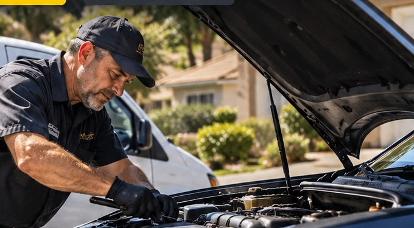

North County Mobile Auto Repair
Professional Mobile Mechanic in North County San Diego
ASE Certified • 40+ Years Experience • Domestic, European & Asian Vehicles • We Come to You
We come to you for repairs, maintenance and diagnostics.

Mobile Auto Repair at Your Location
All major makes: BMW, Mercedes-Benz, Audi, Volkswagen, Toyota, Lexus, Honda, Acura, Nissan, Subaru, Hyundai, Kia, Ford, Chevrolet, GMC, Dodge, Jeep and more. Call to confirm your specific vehicle and repair.
From coastal commuter neighborhoods to inland valleys and ranch roads, we bring repair and diagnostic experience to your driveway or workplace when the job is suitable for mobile service.
We work on domestic, European and Asian vehicles across the 78 corridor, coastal neighborhoods, Escondido, Valley Center and Fallbrook. Call for brake work, starting and charging repairs, cooling systems, engine drivability issues, maintenance and diagnostics. We discuss the repair scope, access and parts before scheduling.
Common mobile repair requests in North County
- Check engine light and OBD-II diagnostics for all makes and models
- Intermittent misfires and rough idle that show up on the 5 or the 15
- Brake pads, rotors and brake system troubleshooting
- Emissions and smog-failure diagnostics before a DMV visit
- No-start and no-crank issues on gas and hybrid vehicles
- Cooling system, ignition and maintenance repairs where mobile access allows
- Alternator, starter and battery replacement after diagnosis
- Electrical draws that leave a battery dead after sitting for a few days
We Come to You Anywhere in North County
If you are just outside these city lines, call anyway. We routinely travel to unincorporated areas and ranches between towns.
Why Trust North County Mobile Auto Diagnostics
ASE-Certified Technician
More than 40 years of hands-on diagnostic experience, including gas, hybrid and light-duty diesel systems. We read the data, not just the codes.
Professional Scan Tools
We use real diagnostic platforms with live data, bidirectional controls and manufacturer-specific coverage. Not a $50 code reader.
We Come to Your Location
Your driveway, office lot, roadside, or ranch. We bring the equipment to the vehicle so you do not waste a day on a tow or a waiting room.
Honest Assessment
We explain the diagnosis and repair options. When the job is suitable for mobile service, we can discuss performing the repair on-site. No pressure, no hidden markups, no parts you do not need.
Mobile Mechanic Services
We handle common repair and diagnostic needs at your location, subject to vehicle access, parts availability and the work required. Call to confirm your specific job.
Brake Service
Brake inspection, pad and rotor replacement, and diagnosis of brake noise or vibration.
Batteries, Starters & Alternators
Battery testing and replacement, no-start diagnosis, and starting or charging system repairs.
Cooling & Engine Repairs
Cooling system diagnosis and repair, ignition components, and common engine drivability problems.
Maintenance & Diagnostics
Routine maintenance, check-engine-light diagnosis, electrical troubleshooting and pre-purchase inspections.
Need a Mobile Mechanic? Call for Repair or Diagnostics
Call North County Mobile Auto Diagnostics for mobile auto repair and diagnostics. Describe your vehicle and the work needed so we can discuss availability and service options.
(760) 477-4130